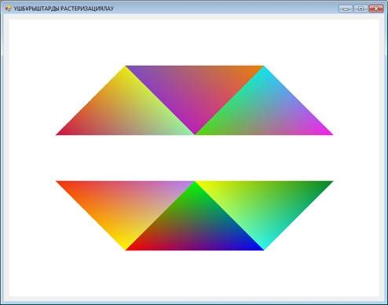

Біз биоцентрлік координаталар негізінде үшбұрыштарды атрибуттар интерполяциясымен растеризациялау алгоритмін қарастырып, бағдарламасын жасаймыз.
Қысқасы, келесі суретті экранға шығаратын бағдарлама құрамыз:
Енді, бәрін кезекпен.
Бізде алты үшбұрыш бар, олардың координаталары берілген, олардың атрибуттары енгізілген. Үшбұрыш төбелерінің түсін біле тұра, бояп шықсақ, өзіндік градиент пайда болады.
Ескерту. Интерполяция – белгілі мәндер негізінде көлемнің аралық мәндерін алу.
Мысалы, бізде өлшемі 800x600 пиксель болатын pictureBox берілсін. Координаттар басы деп сол жақ жоғарғы бұрышты аламыз.
For циклінде координаталық жазықтық бойынша (пиксель бойынша) солдан оңға қарай жылжытамыз. Біздің мақсатымыз – ағымдағы пиксельдер координатасы қандай да бір үшбұрышқа тиісті болады ма екенін анықтау. Бұл тапсырманы шешу үшін бізге барицентрлік координаталарды қолдану керек.
Олардың формуласы:
Мұндағы x1, y1, x2, y2, x3, y3 – үшбұрыш төбелерінің координаталары, ал x, y – ағымдағы нүктенің координатасы. Ағымдағы нүкте үшбұрышқа келесі шарт орындалса тиісті болады:
(яғни, барлық үш биоцентрлік координаталар [0,1] аралығында болуы керек)
Сонымен, бізде үшбұрышты растеризациялаудың келесі алгоритмі пайда болады:
Енді, бұл жобада файл құрастырайық (мысалы оның атауын, data.cs дейік). Оған келесі код жазылады:
using System;
namespace triangle
{
class data
{
public static int n = 6;
public static double[] x1 = { 100, 250, 400, 100, 250, 400 };
public static double[] y1 = { 250, 100, 250, 350, 500, 350 };
public static double[] x2 = { 250, 400, 550, 250, 400, 550 };
public static double[] y2 = { 100, 250, 100, 500, 350, 500 };
public static double[] x3 = { 400, 550, 700, 400, 550, 700 };
public static double[] y3 = { 250, 100, 250, 350, 500, 350 };
public static UInt32[] colorA = { 0xFFcc1343, 0xFF7a50c0, 0xFF58d70c, 0xFFf6310a, 0xFFFF0000, 0xFFfcff00 };
public static UInt32[] colorB = { 0xFFeae817, 0xFFbe1fb8, 0xFF0fe6ee, 0xFFfff600, 0xFF00FF00, 0xFF2cf3f1 };
public static UInt32[] colorC = { 0xFF92eeaf, 0xFFea8208, 0xFFf91dec, 0xFFb482f8, 0xFF0000FF, 0xFF058726 };
}
}
7-ші жолақта үшбұрыштар саны көрсетілген (біздің жағдайда 6 үшбұрыш). 9-16 жолдарда үшбұрыштың төбелерінің координаталары (бірінші бағанда бірінші үшбұрыштікі, екіншісінде екінші үшбұрыштікі және т.с.с.) көрсетілген. 18-20 жолдарда үшбұрыш төбелерінің атрибуттары – олардың түсі көрсетілген.
Әрі қарай, Form1.cs класының кодына көшеміз. Using директивасын қолдана отырып, data.cs файлынан атаулар аймағын байланыстырамыз: using triangle;
Bitmap класының экземплярын жариялаймыз (суреттерді сақтау үшін керек):
public static Bitmap image;
Form1.cs класының конструкторында InitializeComponent()-дан кейін келесі коды тереміз:
public Form1()
{
InitializeComponent();
image = new Bitmap(pictureBox1.Width, pictureBox1.Height);
Rasterization();
pictureBox1.Image = image;
}
Мұнда біз өлшемі pictureBox1 болатын image орнатамыз, Rasterization() функциясын шақырып, суретті Bitmap image-ден pictureBox1-ге ауыстырамыз.
Енді, Rasterization() функциясын қосайық, ол жазықтықтағы барлық пискельдерді тексеріп, шыққан нүкте түсін Bitmap image-ге енгізеді:
public void Rasterization()
{
for (int y = 0; y < pictureBox1.Height; y++)
for (int x = 0; x < pictureBox1.Width; x++)
image.SetPixel(x, y, Color.FromArgb((int)ShadeBackgroundPixel(x, y)));
}
ShadeBackgroundPixel(x, y) – (x, y) координаталарымен пиксель түсін анықтайды.
Color.FromArgb() – түсті ARGB-дан Color класына көшіреді, ол image.SetPixel() функциясының жұмысы үшін керек.
ShadeBackgroundPixel(x, y) функциясына көшейік:
public UInt32 ShadeBackgroundPixel(int x, int y)
{
UInt32 pixelValue; //цвет пикселя с координатами (x, y)
double l1, l2, l3;
int i;
pixelValue = 0xFFFFFFFF; //присваиваем цвет фона - белый
for (i = 0; i < data.n; i++)
{
l1 = ((data.y2[i] - data.y3[i]) * ((double)(x) - data.x3[i]) + (data.x3[i] - data.x2[i]) * ((double)(y) - data.y3[i])) /
((data.y2[i] - data.y3[i]) * (data.x1[i] - data.x3[i]) + (data.x3[i] - data.x2[i]) * (data.y1[i] - data.y3[i]));
l2 = ((data.y3[i] - data.y1[i]) * ((double)(x) - data.x3[i]) + (data.x1[i] - data.x3[i]) * ((double)(y) - data.y3[i])) /
((data.y2[i] - data.y3[i]) * (data.x1[i] - data.x3[i]) + (data.x3[i] - data.x2[i]) * (data.y1[i] - data.y3[i]));
l3 = 1 - l1 - l2;
if (l1 >= 0 && l1 <= 1 && l2 >= 0 && l2 <= 1 && l3 >= 0 && l3 <= 1)
{
pixelValue = (UInt32)0xFF000000 |
((UInt32)(l1 * ((data.colorA[i] & 0x00FF0000) >> 16) + l2 * ((data.colorB[i] & 0x00FF0000) >> 16) + l3 * ((data.colorC[i] & 0x00FF0000) >> 16)) << 16) |
((UInt32)(l1 * ((data.colorA[i] & 0x0000FF00) >> 8) + l2 * ((data.colorB[i] & 0x0000FF00) >> 8) + l3 * ((data.colorC[i] & 0x0000FF00) >> 8)) << 8) |
(UInt32)(l1 * (data.colorA[i] & 0x000000FF) + l2 * (data.colorB[i] & 0x000000FF) + l3 * (data.colorC[i] & 0x000000FF));
break;
}
}
return pixelValue;
}
Мұнда біз UInt32 мәліметтер типімен жұмыс істейміз, бұл еш белгісіз 32-разрядты бүтін сан.
Нәжите:
namespace triangleRasterization
{
partial class Form1
{
private System.ComponentModel.IContainer components = null;
protected override void Dispose(bool disposing)
{
if (disposing && (components != null))
{
components.Dispose();
}
base.Dispose(disposing);
}
private void InitializeComponent()
{
this.pictureBox1 = new System.Windows.Forms.PictureBox();
((System.ComponentModel.ISupportInitialize)(this.pictureBox1)).BeginInit();
this.SuspendLayout();
this.pictureBox1.Location = new System.Drawing.Point(12, 12);
this.pictureBox1.Name = "pictureBox1";
this.pictureBox1.Size = new System.Drawing.Size(800, 600);
this.pictureBox1.TabIndex = 0;
this.pictureBox1.TabStop = false;
this.AutoScaleDimensions = new System.Drawing.SizeF(6F, 13F);
this.AutoScaleMode = System.Windows.Forms.AutoScaleMode.Font;
this.ClientSize = new System.Drawing.Size(823, 623);
this.Controls.Add(this.pictureBox1);
this.Name = "Form1";
this.Text = "ҮШБҰРЫШТАРДЫ РАСТЕРИЗАЦИЯЛАУ";
((System.ComponentModel.ISupportInitialize)(this.pictureBox1)).EndInit();
this.ResumeLayout(false);
}
private System.Windows.Forms.PictureBox pictureBox1;
}
}